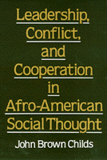

<body bgcolor="#FFFFFF" text="#000000" link="#0000FF" vlink="#CC0000" alink="#CC0000"><center><hr width="350" size="1" align="center" noshade>A reexamination of black social thought in terms of leadership style<hr width="350" size="1" align="center" noshade><p><a href="https://cdcshoppingcart.uchicago.edu/Cart/ChicagoBook.aspx?ISBN=9780877225812&&PRESS=temple" target="_top">Buy this book!</a> | <a href="https://cdcshoppingcart.uchicago.edu/Cart/Cart.aspx?PRESS=temple" target="_top">View Cart</a> | <a href="https://cdcshoppingcart.uchicago.edu/Cart/Cart.aspx?PRESS=temple" target="_top">Check Out</a></p><p></p></center><!--none//--><h1>Leadership, Conflict, and Cooperation in Afro-American Social Thought</h1>
<h3>John Brown Childs</h3>
<P>cloth 0-87722-581-8 $37.95, Jan 89, <FONT COLOR=#990033>Out of Print</FONT>
<br>paper 1-56639-085-0 $19.95, Mar 93, <FONT COLOR=#990033>Out of Print</FONT>
<BR> 224 pp
</P><BLOCKQUOTE><I>"[A]n important effort to broaden the discussion of 20th-century Afro-American social and political thought. By elevating the process to a centrality heretofore denied or overlooked, Childs is intent upon reinvigorating an Afro-American democratic discourse."</I>
<br>&#151<b><I>Zeta Magazine</I></b><I></I></BLOCKQUOTE>
<p>In this book, John Brown Childs presents a fundamental reinterpretation of Afro-American social thought. While existing categories, such as "liberal," "conservative," "left," and "right," are useful, Childs argues that there are two more revealing ways of categorizing the debate over how to struggle for social change.
<p>One of these perspectives is that of an elite vanguard found in both left and right wing positions. Key figures such as Booker T. Washington, the early W.E.B. DuBois, and the socialists A. Philip Randolph and Chandler Owen, often seen to be in opposition with each other, share this perspective, that an elite will lead the masses out of oppression. In contrast, Childs maintains that there is another philosophical current in which the non-elite interaction of many different groups is emphasized. This mutualistic, cooperative approach is found in Marcus Garvey�s Universal Negro Improvement Association, in the early Student Non-Violent Coordinating Committee, and in the Rainbow Coalition.
<p>In his reinterpretation of the various strands of Afro-American social thought, Child�s discussion ranges widely and includes such figures as George Ellis and Arthur Schomburg.
<BR>&nbsp;<h2>Reviews</h2>
<p><I>"This is a gem of a book, not just for its wisdom and clarity but for the delightfulness of many individual passages."</I>
<br>&#151<b><I>New Options</I></b>
<p><I>"[Childs] broadens the framework for interpreting black leadership from 1900 to 1930 by asking why leaders did not encourage egalitarian forms of social action. Eschewing a political approach, Childs categorizes leaders as Vanguard or as espousing Mutuality.... [He] supports the openness of Mutuality and respects the significance of local leaders and diverse ideas."</I>
<br>&#151<b><I>Choice</I></b>
<p><I>"This effort to view black leadership from new perspectives is a fruitful one. Childs is refreshing, as one of the few political analysts who have been able to get past the conventional Washington&#151Du Bois dichotomy."</I>
<br>&#151<b><I>Contemporary Sociology</I></b>
<BR>&nbsp;<h2>Contents</h2><P>
<p>Preface
<br>1. Two World Views
<br>2. Constituting the Vanguard: Washington and Du Bois Imagine Leading Groups, Each in His Own Image
<br>3. <I>The Messenger</I> and <I>The New Negro</I>
<br>4. Non-Elite Social Action: George W. Ellis, Arturo Schomburg, and the Universal Negro Improvement Association
<br>5. From the 1960s into the Future
<br>Notes
<br>Index
</P><BR>&nbsp;<H2>About the Author(s)</H2>
<P><b>John Brown Childs</b> is Associate Professor of Sociology at the University of California, Santa Cruz. He has also written <i><a href="1562_reg.html" TARGET="_top">Transcommunality: From the Politics of Conversion to the Ethics of Respect</a></i> (Temple).</P>
<BR><H2>Subject Categories</H2>
<p><A HREF="/tempress/african.html" TARGET="_top">African American Studies</a>
<BR><A HREF="/tempress/sociology.html" TARGET="_top">Sociology</a>
</p>
<p align="center"><a href="https://cdcshoppingcart.uchicago.edu/Cart/ChicagoBook.aspx?ISBN=9780877225812&&PRESS=temple" target="_top">Buy this book!</a> | <a href="https://cdcshoppingcart.uchicago.edu/Cart/Cart.aspx?PRESS=temple" target="_top">View Cart</a> | <a href="https://cdcshoppingcart.uchicago.edu/Cart/Cart.aspx?PRESS=temple" target="_top">Check Out</a></p><p><font face="Arial" size="1"><a href="copyright.html" onMouseOver="window.status='Web Copyright Policy';return true;" onMouseOut="window.status=''" title="Web Copyright Policy">&copy;</a> 2015 <a href="http://www.temple.edu" target="new" onMouseOver="window.status='Link to Temple University home page';return true;" onMouseOut="window.status=''" title="Link to Temple University home page">Temple University</a>. All Rights Reserved. http://www.temple.edu/tempress/titles/428_reg.html</font></p>